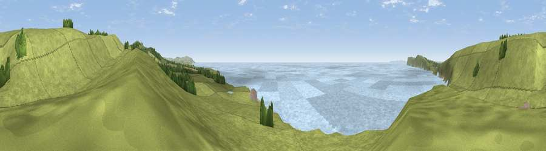

Viewpoint near Brook
#9271 in England · top 34% of its area beats it · near BrookThe view, rendered

A 360° render of this exact spot computed from the terrain model, tree cover and land cover — summer colours, afternoon light, calibrated against photographs of famous viewpoints. Real trees, hedges and buildings will differ in detail.
The panorama
Grey silhouette: terrain skyline in each direction (720 bearings, Earth curvature and refraction included). Dashed green: skyline with trees (+15 m) and buildings (+8 m) as obstacles. Blue strip: how far the ground is visible on each bearing.
Where the view opens
Wedge length = distance to the farthest visible ground on that bearing (vegetation-aware). Rings at 10, 25 and 50 km.
What fills the view
64% grassland · 34% water · 2% woodland
Angular shares of the visible panorama (visual magnitude), not map area. Landscape diversity 0.33 (0–1 Shannon).
Key numbers
More beautiful places nearby
The staircase of upgrades: each row has a higher view potential than everything closer. Driving times are estimates from straight-line distance, calibrated against real road routing — check an actual route before setting out.
| Place | Direction | Drive | Score |
|---|---|---|---|
| Viewpoint near Brook | E · 1 km | ~2 min | 66.6 |
| Viewpoint near Brook | NNW · 1 km | ~3 min | 82.5 |
| Viewpoint near Brook | NE · 1 km | ~3 min | 84.2 |
| Brook Down | ENE · 1 km | ~4 min | 85.3 |
| Mottistone Down | E · 3 km | ~7 min | 87.2 |
| St Catherines Hill | ESE · 14 km | ~25 min | 87.6 |
| Viewpoint near Chale | SE · 14 km | ~26 min | 88.3 |
| Viewpoint near Niton | SE · 15 km | ~27 min | 89.2 |
50.66189, -1.46939 · source: screening · position refined by local search. Computed location — check access rights before visiting.